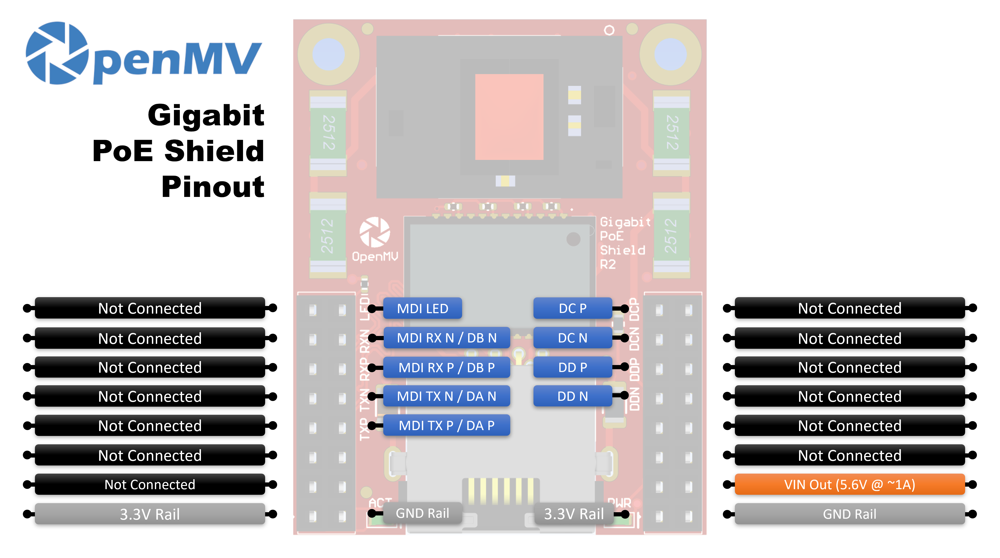

Gigabit PoE Shield¶
The Gigabit PoE Shield is a 10/100/1000 Mb/s Ethernet shield with 802.3af Power-over-Ethernet for OpenMV Cams that have an on-board Ethernet PHY. One cable to a PoE switch carries both power and the network link.

For full datasheet, photos, and ordering see the Gigabit PoE Shield product page.
Note
Supported only on the OpenMV Cam RT1062 and N6.
Highlights¶
10/100/1000 Mb/s Gigabit Ethernet with IEEE 802.3af PoE
Up to ~6 W to the camera via 5.6 V VIN
1500 V isolated design — stacks with dual-header shields via on-board OR’ing diode
Pinout¶
{kind=link}

Pin reference¶
10/100 Mb/s only uses the MDI TX and MDI RX pairs (Pairs A and B). Gigabit (1000BASE-T) is bidirectional on all four pairs A/B/C/D, so the MDI TX ± and MDI RX ± lines double as Pair A and Pair B at gigabit speeds, and Pairs C and D carry the additional gigabit-only pairs.
Pin |
Function |
|---|---|
MDI LED |
PHY link / activity LED line |
MDI TX P / DA P |
Pair A positive — MDI TX+ at 10/100, BI_DA+ at gigabit |
MDI TX N / DA N |
Pair A negative — MDI TX− at 10/100, BI_DA− at gigabit |
MDI RX P / DB P |
Pair B positive — MDI RX+ at 10/100, BI_DB+ at gigabit |
MDI RX N / DB N |
Pair B negative — MDI RX− at 10/100, BI_DB− at gigabit |
DC P |
Pair C positive (BI_DC+) — gigabit only |
DC N |
Pair C negative (BI_DC−) — gigabit only |
DD P |
Pair D positive (BI_DD+) — gigabit only |
DD N |
Pair D negative (BI_DD−) — gigabit only |
VIN out |
5.6 V at up to ~1 A from the on-board PoE regulator (powers the camera) |
3.3V rail |
Powers the shield’s on-board electronics |
GND rail |
Common ground |
Note
The DC and DD pairs are tied to the camera through 0-ohm resistors on the back of the shield. Remove them to free P15–P18 (the gigabit-only pins on cams like the OpenMV N6) for unrelated use — the shield then drops to 10/100 Ethernet since the gigabit pairs are no longer connected.
Usage¶
When the shield is connected to a PoE switch, the camera’s gigabit
PHY appears as a network.LAN interface. DHCP runs
automatically once the link comes up:
import network
import time
lan = network.LAN()
lan.active(True)
while not lan.isconnected():
time.sleep(1)
print("Ethernet IP:", lan.ipconfig("addr4")[0])